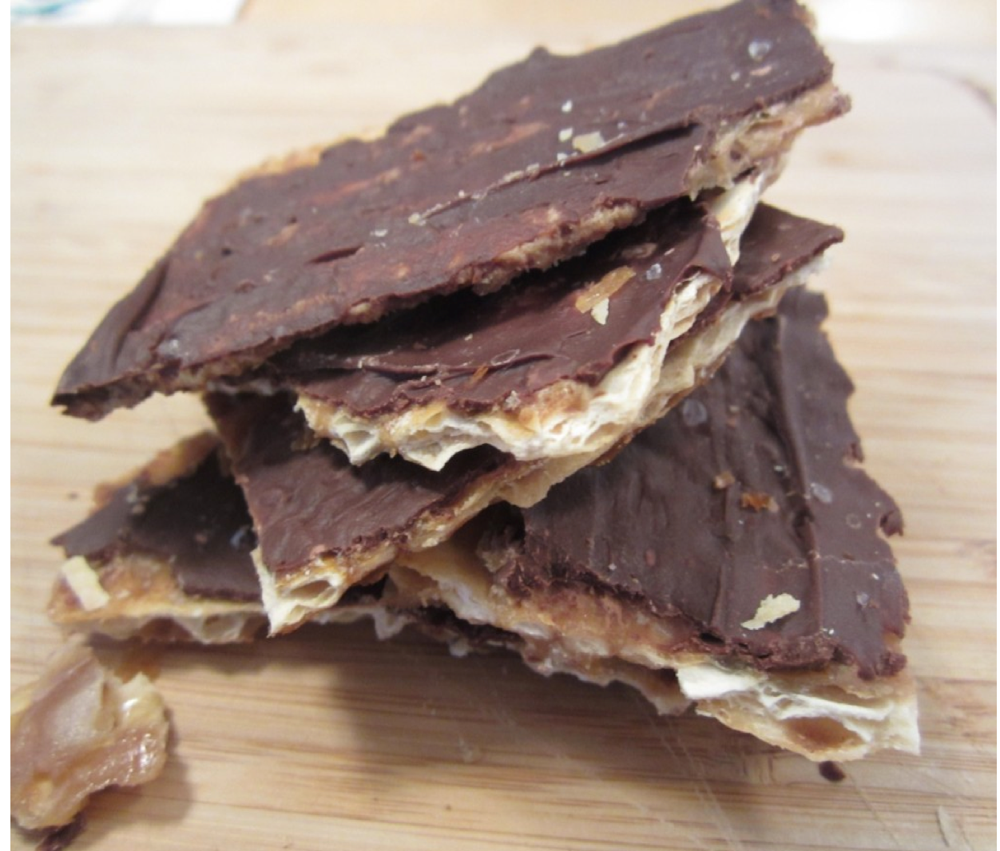

Chocolate-Covered Matzo

This chocolate-covered matzo has a layer of caramel, which makes it a great choice for Passover dessert. Plus, this recipe is a delicious way to use up any leftover matzos!
Ingredients
- olive oil cooking spray
- 4 unsalted matzo boards, or more to taste
- 1 cup unsalted butter
- 1 cup light brown sugar, firmly packed
- ¾ cup chocolate chips
Directions
- Gather the ingredients. Preheat the oven to 375 degrees F (190 degrees C).
- Line a baking sheet with aluminum foil and spray with cooking spray; arrange matzo boards to fit in a single layer, breaking if necessary.
- Combine butter and brown sugar together in a saucepan over medium heat; bring to a boil, stirring constantly, then boil for about 3 minutes.
- Pour butter mixture evenly over matzo on the prepared baking sheet. Transfer baking sheet into the preheated oven and immediately reduce heat to 350 degrees F (175 degrees C); bake for 10 minutes. Reduce heat to 325 degrees F (165 degrees C) if the matzo are smoking too much.
- Remove baking sheet from oven and sprinkle matzo with chocolate chips. Let stand to melt chocolate, about 5 minutes.
- Spread melted chocolate over matzo; place in refrigerator until chilled and set. Break into pieces when cooled.
- Add sliced almonds or sprinkles after the chocolate melts on the warm matzo, or try using white chocolate chips and drizzle dark chocolate on top.